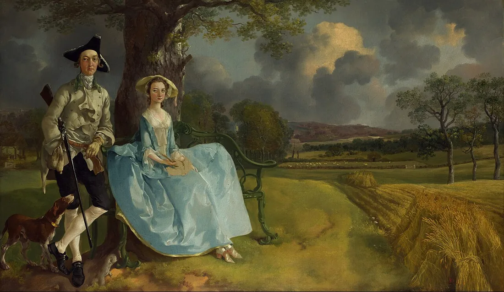

Sessão 09 · Responsabilidade · contemporâneo
Mudar a forma, rever o efeito
O texto funciona no meio escolhido?
Começar
Recupera
De memória, sem abrir o caderno.
De memória
O que distingue votar de deliberar?
Confirmar
Votar conta posições; deliberar confronta razões.
Uma pausa significa sempre medo ou submissão?
Confirmar
Não. O sentido de uma pausa depende das falas e das ações à sua volta.
Que passagem do teu guião assinalaste para rever?
Vê
Observa primeiro. Lê depois.
Compara as três versões da mesma ação.
Exemplo escrito para esta sessão.
Teatro: falas, ação e espaço. Cinema: cenas e ação visível ou audível. Áudio: vozes, sons e transições. Cada meio precisa de tornar a situação compreensível pelas suas possibilidades.
Decide
Primeiro em silêncio, cada pessoa. Depois em grupo.
Sem ecrã
Primeiro, em silêncio
Escolhe a versão que torna a ação mais clara. Guarda uma razão, sem a dizer ainda.
Depois, em grupo
- Adapta três réplicas a outro meio. O que precisa de mudar?
- Distingue uma dúvida de compreensão de uma discordância sobre o desfecho.
- Confirma as convenções do formato e a relação entre argumento e guião.
Comparar razões
Mudar o formato não é mudar o título. Um som precisa de contexto; um pensamento pode ter de se tornar ação. Discordar da personagem não é o mesmo que não compreender a cena.
Faz
Em papel ou no ficheiro do grupo.
Em papel
Dá uma passagem a um colega, sem a explicar. Pergunta quem age, o que muda e o que ficou por perceber.
Revê argumento e guião em conjunto. Regista duas alterações: antes, depois e razão. Confirma fontes e contributos.
GuardarGuião final e duas alterações comentadas.
Rever com outra pessoa
O leitor resume conflito, decisão e consequência. Corrige a informação que falta e explica duas escolhas do formato.
Leva
Em papel, antes de sair.
Em papel
Em papel, antes de sair
Numa frase: que escolha do teu guião só funciona no meio que escolheste?
Confirma
- O meio é reconhecível.
- A ação compreende-se.
- A revisão tem efeito.
O registo fica neste aparelho.